A 为原杆件，B 为原折板，C 为本轮一体化栏体。先比较构件数量、握持凹槽与转角。C 的厚度暂试 80 mm，握持边高 0.90 m，栏顶高 1.10 m。点图看原尺寸。
Blender 工程 · 尺寸、验证与待看项
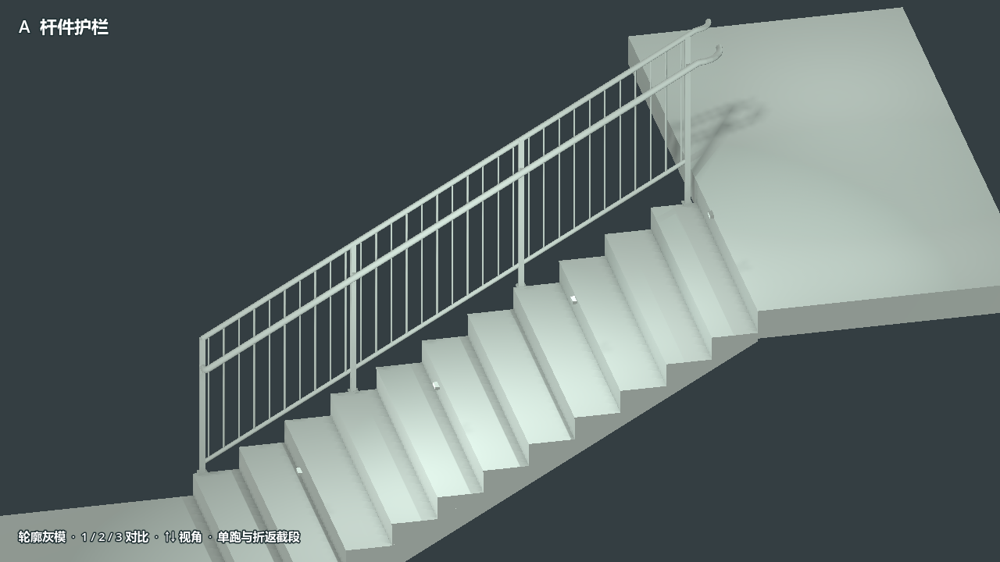
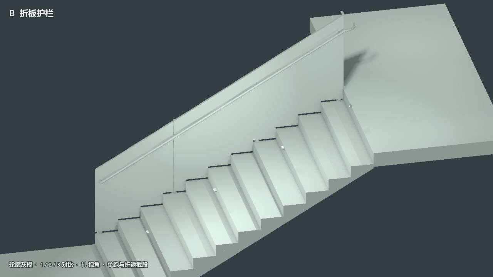
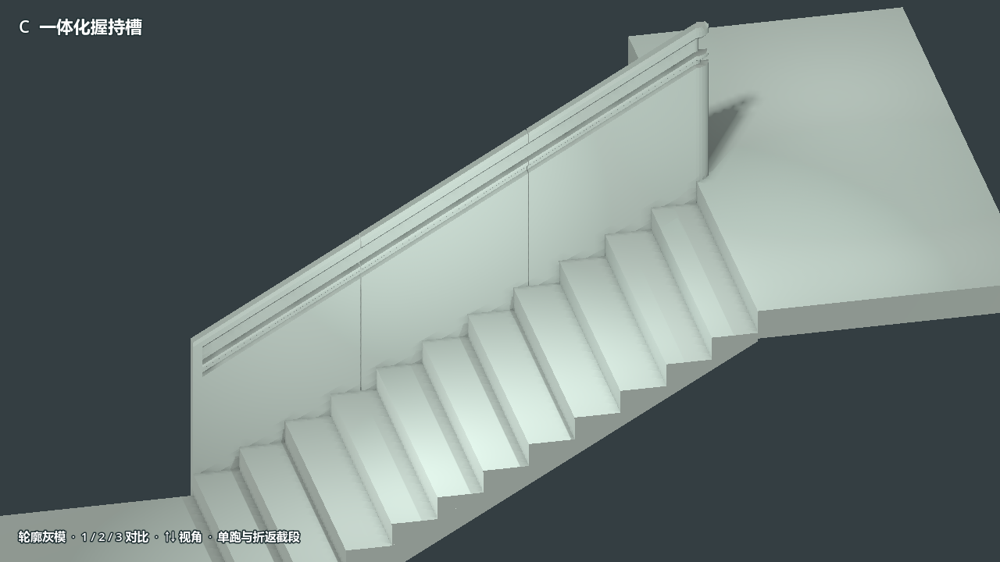
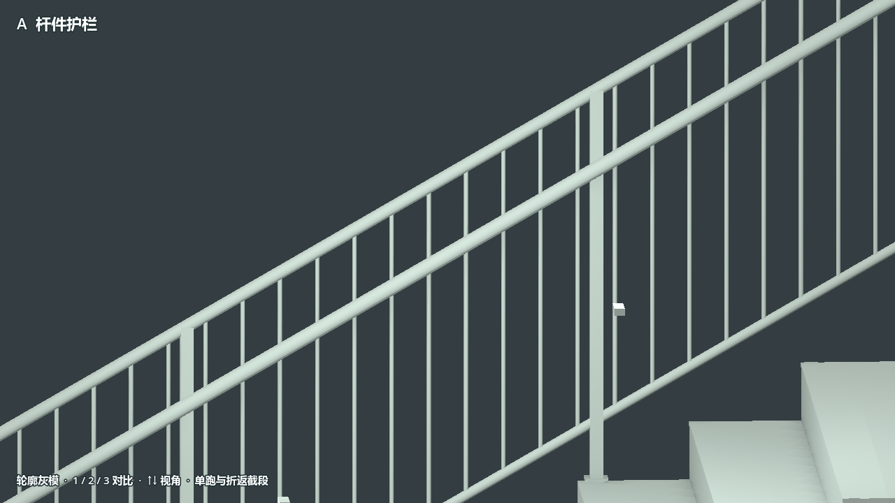
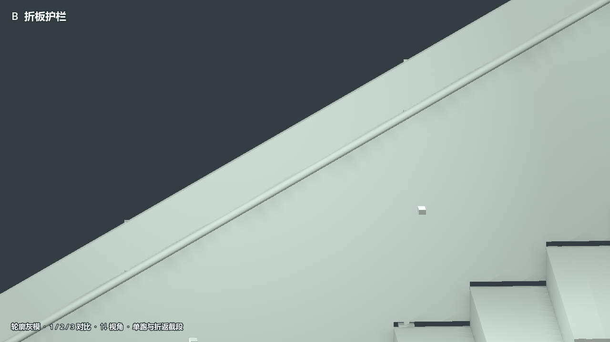
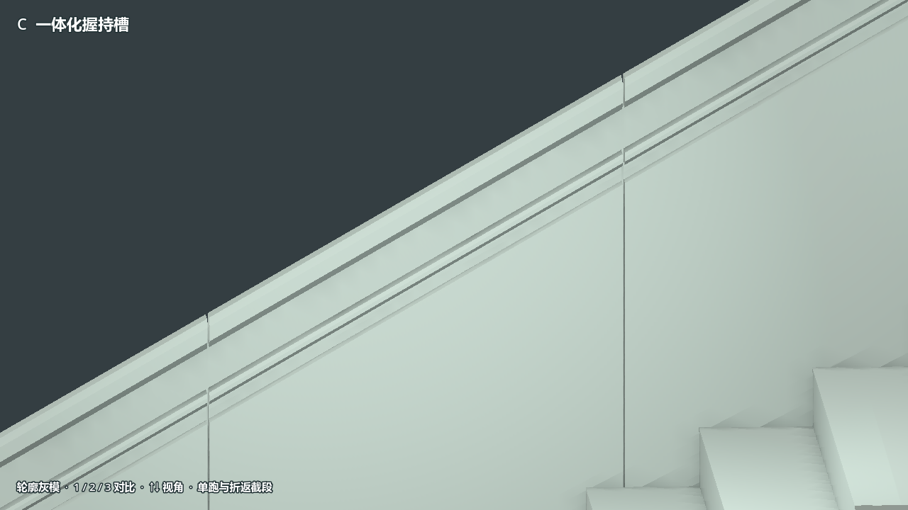
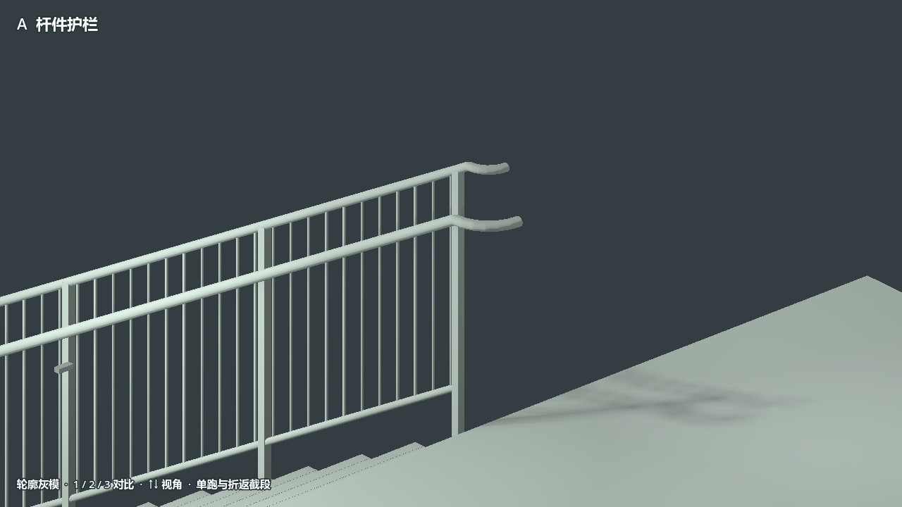
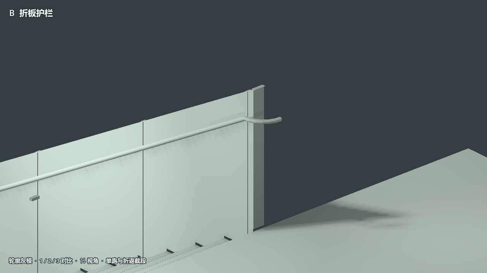
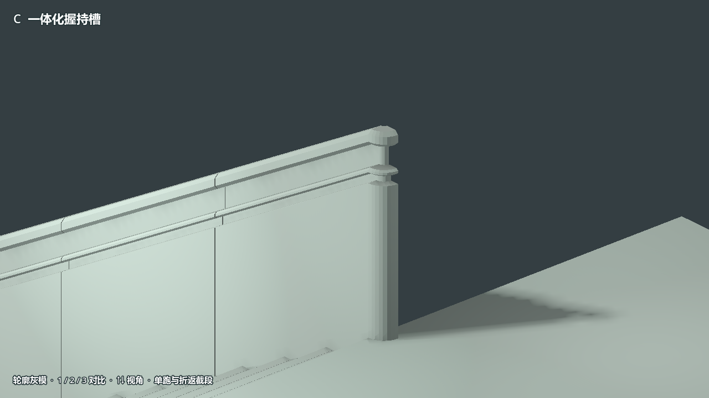
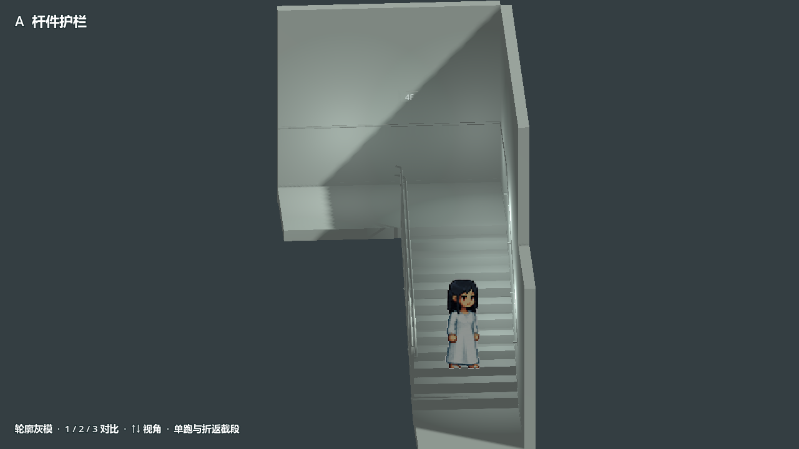
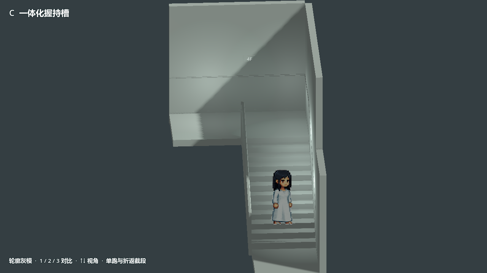
前三组是统一剖切的技术视图，最后一组补看人物和遮挡。样段在梯井中心截断。完整净宽、墙侧握轨与双跑安装仍待后续整合检查。
Godot 相机与光照记录 · 模型检查